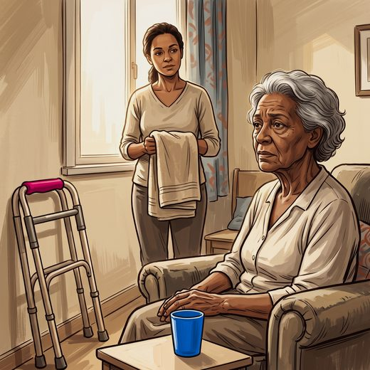

Ferramenta desta aula
Quedas — estratificação de risco. Roda no navegador, sem cadastro.
Consulta rápida à beira do leito
Condutas, doses e interações.
Referências da aula · 4
- Rodrigues RAP, Fernandes DS, Silva MPAE, et al. Predictive capacity of the Integrated Care for Older People screening tool to assess fall risk in older adults in geriatric care. J Clin Nurs. 2026;35(2):804-812. doi:10.1111/jocn.70063.DOI
- Camargos FFO, Dias RC, Dias JMD, Freire MTF. Adaptação transcultural e avaliação das propriedades psicométricas da Falls Efficacy Scale – International em idosos brasileiros (FES-I-BRASIL). Rev Bras Fisioter. 2010;14(3):237-43. PMID 20730369.PubMed
- Montero-Odasso M, van der Velde N, Martin FC, et al. World guidelines for falls prevention and management for older adults: a global initiative. Age Ageing. 2022;51(9):afac205. PMID 36178003. doi:10.1093/ageing/afac205.PubMedDOI
- Freitas EV, Py L, organizadores. Tratado de Geriatria e Gerontologia. 5ª ed. Rio de Janeiro: Guanabara Koogan; 2022.
Documentos oficiais
Leis e publicações do Ministério da Saúde sobre o cuidado da pessoa idosa, de acesso livre.
Abrir os documentos